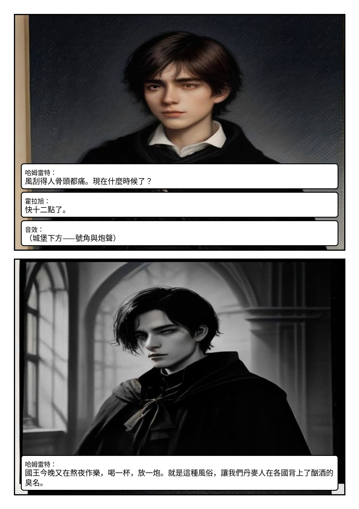
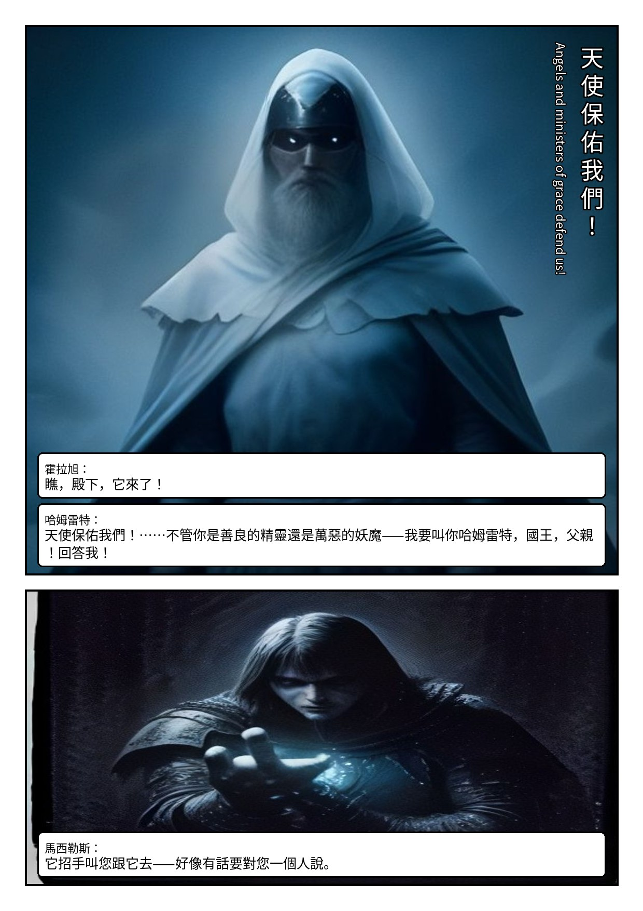
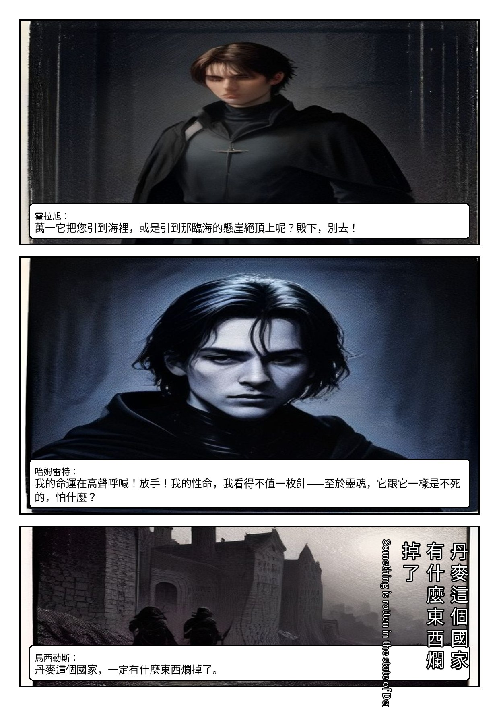
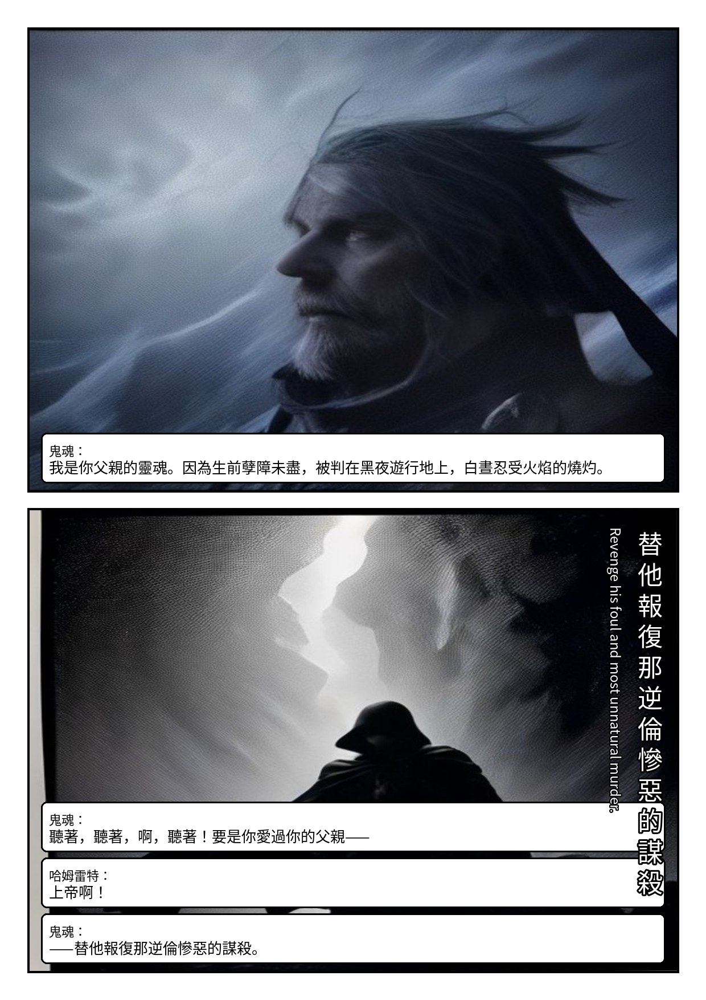
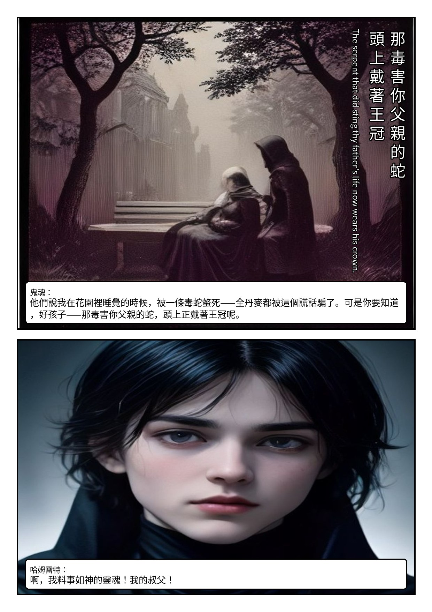
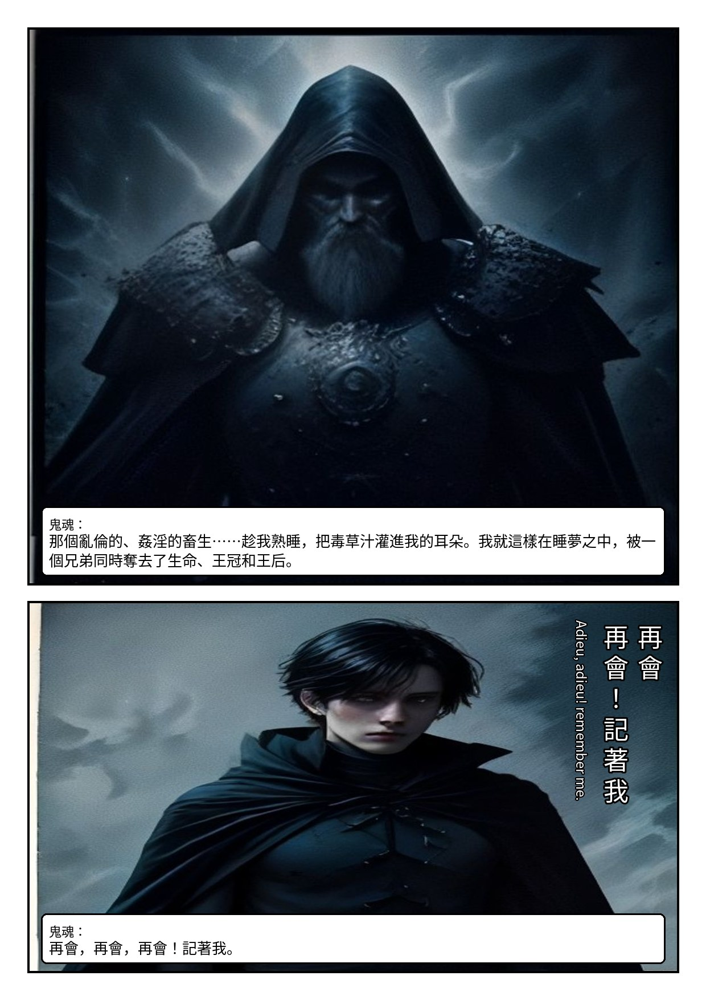
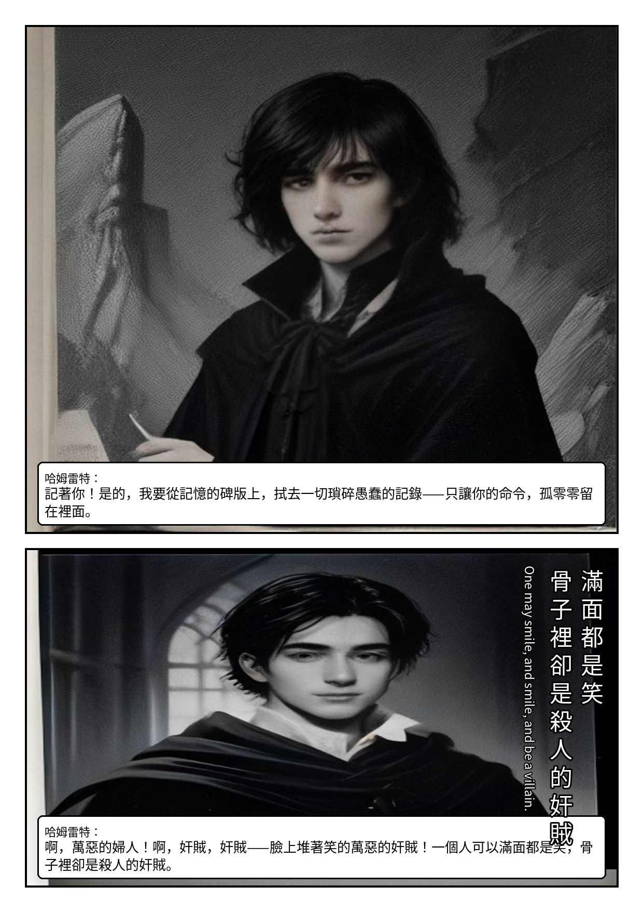
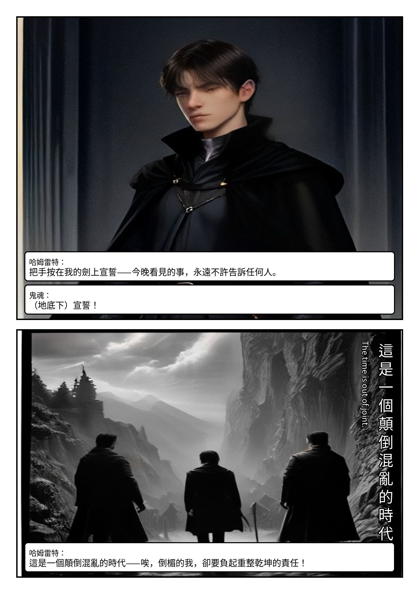

Act I · Scenes IV–V
亡魂吐真The Platform. Another Part of the Platform.
❦
「那毒害你父親的蛇，頭上正戴著王冠呢。」真相、誓言，與顛倒混亂的時代。
本場人物哈姆雷特・全身黑衣／老王鬼魂・掀面甲全甲・幽藍冷光／霍拉旭・高領學袍／馬西勒斯・守夜士兵
首輪草稿・Pollinations 免費生圖——校構圖與對白用，角色定裝後會全面重生







